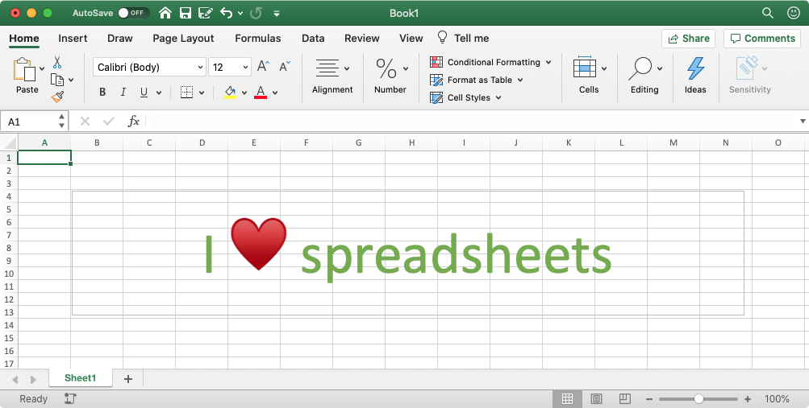
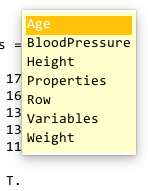

Tables
for Storing Data in a Spreadsheet-Like Format
"It's Business Time" - Flight of the Conchords, Business Time

Overview
The Table class is the Excel spreadsheet of data types. This data type is designed to handle mixed, column-sorted, spreadsheet-type data. In a table, you can have one column data that contains a cell array and another column that contains numeric data. Table variables are intuitive to index and concatenate, have named column (and row) headers, and have many useful support functions such as a summary or varfun.
Learning Objectives
After completing this module, you should be able to:
-
Create your own table variables by using the table function
-
Use dot notation and indexing to access content from table variables
-
Use dot notation to access and modify table properties such as variable names.
Important Terminology
You should also be able to define the following terms as they refer to MATLAB programming:
-
table: a data type suitable for spreadsheet-type data
-
dot notation: adding a period after the name of a variable to access the fields of that variable
-
function handle: a data type that stores an association to a function, rather than the function itself
Important Functions
After reviewing this module, you should be able to use the following functions:
-
table: create a table variable
-
summary: print a summary of a table variable to the command window
-
sortrows: sort rows of the table
-
varfun: apply functions to columns in the table
-
height: number of table rows
-
groupsummary: Group summary computations
Relevant MATLAB Documentation
Create a Table Variable
A table variable is basically a container for variables of other classes, which all must be column vectors (or matrices) that share the same number of rows
Let's first create some variables:
| Create Some Data | |
|---|---|
We can examine the properties of these variables in the workspace or using the function whos:
Name Size Bytes Class Attributes
Age 5x1 40 double
BloodPressure 5x2 80 double
Height 5x1 40 double
LastName 5x1 620 cell
Weight 5x1 40 double
…Notice that all of these variables are column vectors with the same number of rows: We have one 5X1 cell array, the variable LastName. The rest of the variables are numeric arrays. BloodPressure is a 5X2 numeric array, while the rest of the variables are 5X1 numeric arrays.
Example: Creating a table variable using the table function
We can create a new table variable that combines all of these variables into a single variable called T using the table function.
| Create table | |
|---|---|
Notice that the inputs into table are simply the variables that we want to combine, separated by commas. Each input becomes a column in the T variable, with the name of the inputted variable becoming the name of the column. In the MATLAB vernacular, these columns are known as "Variables". In this function call to table, we also input a paired input, 'RowNames', that sets the names of the rows in the table to the values found in the variable LastName. So, in this table, both the columns and the rows have headers. Note, I don't usually include row headers, but it is doable.
And the table created is as follows:
Accessing Table Content
dot notation
Once we get the data into a table, it is very easy to access any individual column of data (aka field) using dot notation. In this notation, you type the name of the Table variable (T), followed by a period, followed by the name of the field that you want to access. For example, the following syntax accesses the 'Weight' field:
| Access Data from Weight Column | |
|---|---|
…Note how using dot notation returns a numeric array (ans is a double). When you use dot notation, you are extracting the data type that is stored in the table variable from that column.
So, the best way to think of a table is a data type that combines and organizes other data types, like cell arrays and numeric arrays.
Pro-Tip: TAB for a list of table variables
After you type the name of the table variable, T, and the period, hit the "tab" key on the keyboard. A list of all available fields should pop up and then you can choose the one you want to access.
Try it now:
- Type
T.in the command window - Hit the tab key to reveal the pop-up menu
- Use arrows to select the desired field
- Hit Enter or TAB to select

Table Indexing
There are many ways to index a table. You can use parentheses or curly brackets. And inside those parentheses or curly brackets, you can use Index Values (numbers) or column and row headers (character arrays).
Parentheses Indexing
As expected, indexing with parentheses returns a smaller table.
Index Column from a Table Variable
The following syntax extracts the second column from T and returns a one-column table
Since we indexed with the parentheses, the output is a smaller table with just the Weight column, but all row names included.
Index Row from a Table variable
The following syntax indexes out the 3rd and 4th rows from T.
ans =
Age Height Weight BloodPressure
___ ______ ______ _____________
Jones 40 67 133 117 75
Johnson 43 69 163 109 77
Again, since we used the parentheses, we get a smaller table variable with fewer rows, and all of the columns.
Curly Bracket indexing
You can also index a table variable with curly brackets. Similar to with cell arrays, if you index with curly brackets, you get the contents from within.
Example: Curly bracket indexing of a table
We can use Curly Brackets to extract data from a table, similar to dot notation:
Since the second column is the 'Weight' column, we get the weight values. This is the same output as if we had used the dot notation: T.Weight
Although Dot notation is usually simpler than Curly Bracket to extract a column of data from a table, curly bracket indexing can be useful if you want to extract multiple columns worth of data from a table, like so:
Example: Indexing Multiple Columns using Curly brackets
| Extract Data from both the Height and Weight columns | |
|---|---|
…Note, this only works for columns that share the same data type (like numeric arrays)
Indexing by Column Name
Another useful feature for tables is the ability to index by the column or row headers to index out data.
Index by Column Header
The following syntax indexes T by the Weight Column:
…Since we indexed using parentheses, we get a smaller table with just one column ( ans is a 5X1 table).
Index by Row Header
Since we named our rows, we can use row names to index as well:
>>T({'Johnson','Jones'},:)
ans =
Age Height Weight BloodPressure
___ ______ ______ _____________
Johnson 43 69 163 109 77
Jones 40 67 133 117 75
…Again, we get a table, because we used parentheses to index. In this syntax, the curly brackets were used to concatenate into a cell array so we can index two row names.
Challenge: Table Indexing
Show the syntax to index T and get a smaller table with the just the first three rows in it.
Show the syntax to index T and get a smaller table with the just the first three rows in it.
To do this, you need to use parentheses, as follows
| Index first three rows of T | |
|---|---|
Show the Syntax to return the data from the "BloodPressure" Column in T.
Show the Syntax to return the data from the "BloodPressure" Column in T**.
You simply use dot notation, as follows:
Show the Syntax to return just the first column of data from the "BloodPressure" Column in T.
Show the Syntax to return just the first column of data from the "BloodPressure" Column in T.
The way to think about this is that once you use dot notation, you are basically dealing with the contained variable. When we enter T.BloodPressure to access the BloodPressure column, we are basically now dealing with a numeric array. So, now we can index using the parentheses to access just the first column of the BloodPressure data, just as we would for any numeric array.
This syntax
You get a scalar table: a table with just 1 data point.
How would you use Name indexing on T if you want Ms. Brown's Blood Pressure returned as a:
- Table?
- Numeric variable?
Removing Table Content
Just as we can remove elements from arrays, we can remove columns from tables using the empty brackets.
For example, to remove the 'BloodPressure' column, we would use the following syntax:
| Remove Column from Table Variable | |
|---|---|
T =
5×3 table
Age Height Weight
___ ______ ______
Smith 38 71 176
Johnson 43 69 163
Williams 38 64 131
Jones 40 67 133
Brown 49 64 119
…and the BloodPressure column is unceremoniously dumped.
But since we still have the numeric array BloodPressure in the workspace, we can easily add back the column using dot notation:
| Add Column to Table Variable | |
|---|---|
T =
5×4 table
Age Height Weight BloodPressure
___ ______ ______ _____________
Smith 38 71 176 124 93
Johnson 43 69 163 109 77
Williams 38 64 131 125 83
Jones 40 67 133 117 75
Brown 49 64 119 122 80
Note
This syntax only works because BloodPressure is still a variable in the workspace and T is already a table variable. If T didn't already exist as a table, this syntax would instead create a structure array (See Structure Array Module).
Table Properties
Every table has a hidden field called Properties that contains the property values for the table. Properties include the names of each Column (VariableNames) and the name of each row (RowNames, optional). You can also store additional information in a table by storing it in the UserData field. UserData can contain any class of data, even another table.
Accessing the Properties using Dot Notation
Table properties, other than the "VariableNames" field, are often empty by default. You can see the properties of a table by using dot notation as follows:
| Display table properties | |
|---|---|
ans =
Description: ''
VariableDescriptions: {}
VariableUnits: {}
DimensionNames: {'Row' 'Variable'}
UserData: []
RowNames: {5x1 cell}
VariableNames: {'Age' 'Height' 'Weight' 'BloodPressure'}
…Notice that T.Properties returns a structure data type. Also, notice that this structure contains metadata fields that describe the table, such as the column headers ("VariableNames") and row headers ("RowNames"). There are also fields where you can add detailed descriptions and units of measure for each column.
Changing Properties using indexing and dot notation
Since the properties are a structure array, we can manipulate the data in this structure using dot notation. Notice that the "VariableNames" field is a cell array. So you can modify this array using dot notation and the syntax for cell arrays. For example, to change the column header 'BloodPressure' to 'BP', you can use the following syntax:
| Change Column Name | |
|---|---|
T =
5×4 table
Age Height Weight BP
___ ______ ______ __________
Smith 38 71 176 124 93
Johnson 43 69 163 109 77
Williams 38 64 131 125 83
Jones 40 67 133 117 75
Brown 49 64 119 122 80
Adding New Property data
You can also add new information to the table properties. Notice that there is a field for Variable Units. Use the following syntax to update this field:
| Add Variable Units to Properties | |
|---|---|
Viewing updated properties
To see updates to the Table properties, you need to explicitly call the Properties field as follows:
| Display Table Properties | |
|---|---|
ans =
TableProperties with properties:
Description: ''
UserData: []
DimensionNames: {'Row' 'Variables'}
VariableNames: {'Age' 'Height' 'Weight' 'BP'}
VariableDescriptions: {}
VariableUnits: {'years' 'Inches' 'Pounds' 'Diastolic - Systolic'}
VariableContinuity: []
RowNames: {5×1 cell}
…Now you can see all of the updates that were made to the table properties.
Useful Table Operations and Functions
MATLAB provides many useful functions for table variables.
Summary function
The summary function returns a statistical summary of the data in each column, including the min, median, and max. Note that the summary function does not return an output (i.e., ans is not populated). Instead, the result is "printed" to the command window.
| Summary | |
|---|---|
T: 5×4 table
Variables:
Age: double
Height: double
Weight: double
BloodPressure: 2-column double
Statistics for applicable variables:
NumMissing Min Median Max Mean Std
Age 0 38 40 49 41.6 4.6152
Height 0 64 67 71 67 3.0822
Weight 0 119 133 176 144.4 23.975
BloodPressure(:,1) 0 109 122 125 119.4 6.5803
BloodPressure(:,2) 0 75 80 93 81.6 7.0569
Height, Width, and Size functions
Sometimes you just want to know the number of rows in a table. The function height returns this value:
And sometimes you just want to know the number of columns in a table. The function width intuitively returns the number of columns (or variables) in a table:
Example. Function width returns number of columns
| Function: width | |
|---|---|
The function size returns both dimensions (or the specified the dimension), as we have seen with other variable types:
Example: size returns the dimensions of the table
| Function: size | |
|---|---|
Example: The second input into size determines which dimension to calculate the size
Remember, the second dimension means the number of columns, in MATLAB.
Sortrows function
Organizing your data into a table greatly simplifies data analysis. For example, you can use the function sortrows to organize the table alphabetically by "RowName":
sortrows by row names
We can also sort by column or by multiple columns. The following syntax sorts the table first by height, then by weight:
Sort rows by Height, then Weight
ans =
5×4 table
Age Height Weight BloodPressure
___ ______ ______ _____________
Brown 49 64 119 122 80
Williams 38 64 131 125 83
Jones 40 67 133 117 75
Johnson 43 69 163 109 77
Smith 38 71 176 124 93
…now the rows are sorted in ascending order by the height, followed by the weight.
Challenge: sortrows
What will you get if you typed: sortrows(T), without additional inputs?
What do you think would happen if you just typed: sortrows(T), without any additional inputs?
ans =
5×4 table
Age Height Weight BloodPressure
___ ______ ______ _____________
Williams 38 64 131 125 83
Smith 38 71 176 124 93
Jones 40 67 133 117 75
Johnson 43 69 163 109 77
Brown 49 64 119 122 80
The table is sorted by the first column, 'Age', and the output is assigned to the default variable ans.
movevars (Moving columns around)
The function movevars can be used to reorder the variables in a table.
For example, say we added two new variable to our table, "Sex" and "Region"
| Add variables using dot notation | |
|---|---|
T =
5×6 table
Age Height Weight BloodPressure Sex Region
___ ______ ______ _____________ ________ _______
Smith 38 71 176 124 93 "Male" "North"
Johnson 43 69 163 109 77 "Male" "North"
Williams 38 64 131 125 83 "Female" "West"
Jones 40 67 133 117 75 "Female" "South"
Brown 49 64 119 122 80 "Male" "East"
…When you add new variables using dot notation, the default is to add these variable at the far right of the table.
To reorder the columns, you use the function movevars as follows:
| Reorder variables | |
|---|---|
T =
5×6 table
Sex Region Age Height Weight BloodPressure
________ _______ ___ ______ ______ _____________
Smith "Male" "North" 38 71 176 124 93
Johnson "Male" "North" 43 69 163 109 77
Williams "Female" "West" 38 64 131 125 83
Jones "Female" "South" 40 67 133 117 75
Brown "Male" "East" 49 64 119 122 80
…and we get a newly reordered table.
convertvars (Type Casting Variables)
The function convertvars can be used to type cast multiple variables in a table at the same time.
For example, in the previous section, we added two new string array variables to the table: "Sex" and "Region". However, for data processing, it's often preferable to have categorical arrays, instead of string arrays.
We can type cast single variables in a table using dot notation, as follows:
| Type cast One Variable | |
|---|---|
Or, if we want to type cast multiple variables at the same time, we can use the convertvars function:
| Type cast multiple variables at the same time | |
|---|---|
T =
5×6 table
Sex Region Age Height Weight BloodPressure
______ ______ ___ ______ ______ _____________
Smith Male North 38 71 176 124 93
Johnson Male North 43 69 163 109 77
Williams Female West 38 64 131 125 83
Jones Female South 40 67 133 117 75
Brown Male East 49 64 119 122 80
…And now, "Sex" and "region" are categorical arrays (notice that there are no double quote delimiters in Sex and Region columns).
Running summary on the updated table confirms these changes:
| Table Summary | |
|---|---|
T: 5×6 table
Variables:
Sex: categorical (2 categories)
Region: categorical (4 categories)
Age: double
Height: double
Weight: double
BloodPressure: 2-column double
Statistics for applicable variables:
NumMissing Min Median Max Mean Std
Sex 0
Region 0
Age 0 38 40 49 41.6 4.6152
Height 0 64 67 71 67 3.0822
Weight 0 119 133 176 144.4 23.975
BloodPressure(:,1) 0 109 122 125 119.4 6.5803
BloodPressure(:,2) 0 75 80 93 81.6 7.0569
Applying Functions to Variables
The varfun function is used to apply a function to multiple columns in a table. You can use varfun to quickly calculate the statistics for multiple columns. In contrast to the summary function, varfun returns a table data which can then be assigned to a new table variable (as opposed to just printing the result to the command window).
Using varfun to calculate the mean for all columns
The first input into varfun should be the function handle. Remember a function handle is just the function name preceded by the @ symbol. This basically means to pass the name of the function into another function.
Since we want to calculate the average of each column, we need to pass in the @mean function handle.
S =
1×4 table
mean_Age mean_Height mean_Weight mean_BloodPressure
________ ___________ ___________ __________________
41.6 67 65.499 119.4 81.6
The result is a new table S with the means from the columns in T.
Notice that names of the columns in the new table S are prepended with the name of the function that was applied to the column, e.g. 'mean_age' is the average of the age column in T
This simple call to varfun, with no additional inputs, worked because all of the columns in T are numeric arrays. If the table T had been more complex (e.g. if some of the columns contained string arrays), then we would have needed more inputs to specify precisely which columns we wanted to apply the mean function.
Challenge: varfun
How would you calculate the standard deviation of the columns in T and assign the result to Sstd?
Sstd =
1×4 table
std_Age std_Height std_Weight std_BloodPressure
_______ __________ __________ _________________
4.6152 3.0822 23.975 6.5803 7.0569
and this syntax returns the last element in the array, which contains the letter o:
Review the varfun help page.
What input pair would you use to calculate the mean of just the height and weight columns in T?
What input pair would you use to calculate the mean of just the height and weight columns in T?
Grouping Variables
Grouping Variables are used to group the rows of a table into different categories, allowing for statistical calculations based on category. For example, say you wanted to calculate the mean Weight and Blood Pressure for old and young people. To do this, you need a grouping variable that groups the rows into categories such as "old" or "not old". A grouping variable can be a cell, a boolean or even a numeric array.
Example: Adding a Grouping Variable to a table
In this example, we add a new logical array column called 'Old' to our table where TRUE indicates "old" and FALSE indicates "not old". As everyone knows, anything older than 39 is definitely old, so let's use the relational operation 'Age greater than 39' to create our new grouping variable as follows:
| Age greater than 39 is True | |
|---|---|
T =
5×5 table
Age Height Weight BloodPressure Old
___ ______ ______ _____________ _____
Smith 38 71 176 124 93 false
Johnson 43 69 163 109 77 true
Williams 38 64 131 125 83 false
Jones 40 67 133 117 75 true
Brown 49 64 119 122 80 true
Now we have a new column in T called 'Old' and in this column, there is a true for any row where the age is greater than 39 and false everywhere else.
We can use the "Old" column as a grouping variable in the function varfun:
Example: Using a Grouping Variable in varfun
| Set Grouping Variable to Old | |
|---|---|
S =
2×6 table
Old GroupCount mean_Age mean_Height mean_Weight mean_BloodPressure
_____ __________ ________ ___________ ___________ __________________
false 2 38 67.5 153.5 124.5 88
true 3 44 66.667 138.33 116 77.333
After setting the grouping variable to "Old", varfun now returns a new table (S) with two rows: one for each category in the Grouping variable (false or true). The first row contains the average of all rows in T that have a false in the 'Old' column, while the second row contains the average of all rows in T that have a true in the 'Old' column.
Also notice that:
- Two new columns have been added to the
Stable: "Old" and "GroupCount" - The column "Old" contains the unique values (or categories) found in the grouping variable from
T:falseandtrue. - The column "GroupCount" contains the counts for each category. In table
Tthere were 2 "not-olds" and 3 "olds"
Group Summary
The function groupsummary is designed from the ground up to calculate statistics from table variables using grouping variables.
The most basic function call to groupsummary is as follows:
| Function groupsummary | |
|---|---|
…this call simply computes a count of the different groups.
However, groupsummary becomes really useful when you want to calculate the statistics on the different columns, as follows:
Example: Calculate group averages
| calculate mean | |
|---|---|
G =
2×6 table
Old GroupCount mean_Age mean_Height mean_Weight mean_BloodPressure
_____ __________ ________ ___________ ___________ __________________
false 2 38 67.5 153.5 124.5 88
true 3 44 66.667 138.33 116 77.333
…Here we get the mean for each column. Note, this only works because all of the other columns in the table are numeric.
You can also calculate multiple statistics, like mean and standard deviation, and specify the columns you want to calculate
Example: Calculate mean and standard deviation for Height
If you want to calculate both the mean and the standard deviation, but just for the "Height" column, you can use the following function call.
G =
2×4 table
Old GroupCount mean_Height std_Height
_____ __________ ___________ __________
false 2 67.5 4.9497
true 3 66.667 2.5166
Now we get two stats columns: One for the mean and one for the standard deviation. This is incredibly powerful for a single function call. To get the equivalent results using varfun, we would need at least two function calls and have to create two separate output variables, which would then need to be concatenated in some fashion.
There are of course many ways that you can call groupsummary. Read the details on the Mathworks groupsummary documentation page.
CHALLENGE: groupsummary
Use groupsummary to calculate the median and range for the height and weight columns in T. Use "Old" as a grouping variable.
| Calc Median and Range for Height and Weight | |
|---|---|
Do you have to include a grouping variable? What happens if you use the empty brackets ([]) in the grouping variable position?
| Empty Brackets for Grouping Var | |
|---|---|
Mathematical Operations
In addition to using specialized functions to analyze our data, we can perform mathematical operations on the columns of table variables by combining dot notation and table indexing. Consider the following example:
Converting Pounds to Kilos
In T, the "Weight" column contains the weight of each person in pounds. For scientific analysis, weight is often recorded in kilograms. The conversion factor from pounds to kilograms is as follows:
1 pound (lb) is equal to 0.45359237 kilograms (kg).
Taking this into consideration, we can convert our "Weight" Column to kilograms using the following syntax:
Example: Table Math
| Convert pounds to kilos | |
|---|---|
T =
5×5 table
Age Height Weight BloodPressure Weight_k
___ ______ ______ _____________ ________
Smith 38 71 176 124 93 79.832
Johnson 43 69 163 109 77 73.936
Williams 38 64 131 125 83 59.421
Jones 40 67 133 117 75 60.328
Brown 49 64 119 122 80 53.977
…This syntax adds a new column called "Weight_k" with the properly converted values in kilograms
However, sometimes you don't want to clutter up your table. If you want to keep the same number of columns, you can simply overwrite the Weight column with the converted values, using the following syntax.
| Overwrite Weight Column | |
|---|---|
T =
5×5 table
Age Height Weight BloodPressure Weight_k
___ ______ ______ _____________ ________
Smith 38 71 79.832 124 93 79.832
Johnson 43 69 73.936 109 77 73.936
Williams 38 64 59.421 125 83 59.421
Jones 40 67 60.328 117 75 60.328
Brown 49 64 53.977 122 80 53.977
Then, we could remove the "Weight_k" column and update the "VariableUnits" property field as follows:
| Update Table | |
|---|---|
T =
5×4 table
Age Height Weight BloodPressure
___ ______ ______ _____________
Smith 38 71 79.832 124 93
Johnson 43 69 73.936 109 77
Williams 38 64 59.421 125 83
Jones 40 67 60.328 117 75
Brown 49 64 53.977 122 80
Module over